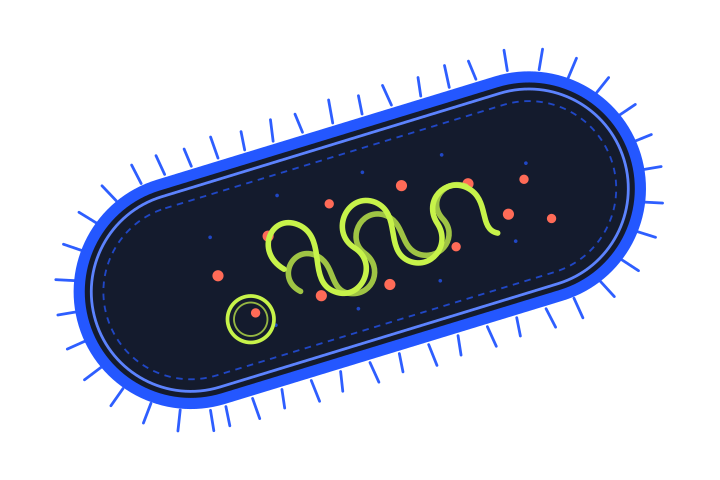

Step 1 · Choose the route
Start with the boundary.
Follow a short path through three structures that keep a bacterial cell working.
Concourse is an open-source, local-first system for building guided learning routes, practicing recall, and sharing portable course packs.
01 / Try the idea
One small route. Four deliberate steps. No account and nothing leaves your browser.
Step 1 · Choose the route
Follow a short path through three structures that keep a bacterial cell working.
Step 2 · Learn one idea

A bacterial cell’s membrane regulates what moves into and out of the cell, helping it maintain the conditions it needs to function.
Step 3 · Recall it
Cell membrane. It regulates movement into and out of the cell.
Step 4 · See what moved
Correct—the cell membrane is the selective boundary.
bacterial-cell-basics.learntpack
Route ready · 0 of 3 concepts
02 / Open by design
The application makes learning usable. The pack system makes routes portable, inspectable, and extensible.
Learning experience
Routes · recall · progress · browser and desktop UI
Open pack system
Contracts · validation · archives · local installation · authored content
03 / Contribute
Concourse has a working foundation and useful edges in every direction.
React UI, accessibility, learning flows, visualization, and interaction design.
02Sequencing, evidence, recall, progress, and the framework-independent core.
03Contracts, validation, SDK tooling, security boundaries, and import/export.
04Example packs, authoring guidance, templates, documentation, and open course material.
04 / Project truth